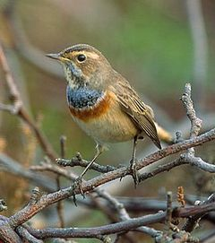
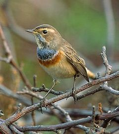

| Bluethroat | |
|---|---|
|  | |
| Male- Form 'white-spotted' | |
| Conservation status | |
| Binomial name | |
| Luscinia svecica (Linnaeus, 1758) |
| Bluethroat | |
|---|---|
|  | |
| Male- Form 'white-spotted' | |
| Conservation status | |
| Binomial name | |
| Luscinia svecica (Linnaeus, 1758) |
The Bluethroat (Luscinia svecica) is a small passerine bird that was formerly classed as a member of the thrush family Turdidae, but is now more generally considered to be an Old World flycatcher, Muscicapidae. It, and similar small European species, are often called chats.
-_Female_at_Bharatpur_I_IMG_5484.jpg)
It is a migratory insectivorous species breeding in wet birch wood or bushy swamp in Europe and Asia with a foothold in western Alaska. It nests in tussocks or low in dense bushes. It winters in north Africa and India.
The Bluethroat is similar in size to the European Robin at 13–14 cm. It is plain brown above except for the distinctive black tail with red side patches. It has a strong white supercilium. The male has a blue bib edged below with successive black, white and rust coloured borders. Some races, such as L. svecica svecica (Red-spotted Bluethroat) of northern Eurasia, have a red spot in the centre of the blue bib.
Others, such as L. svecica cyanecula (White-spotted Bluethroat) of southern and central Europe, have a white spot in the centre of the blue bib. L. svecica magna in Turkey has no central spot.
Females of all races usually have just a blackish crescent on an otherwise cream throat and breast. Newly fledged juveniles are freckled and spotted dark brown above.
Despite the distinctive appearance of the males, recent genetic studies show only limited variation between the forms, and confirm that this is a single species.[1]
The male has a varied and very imitative song [2]. Its call is a typical chat “chack” noise.

_small.jpg){kind=link}
{kind=link}